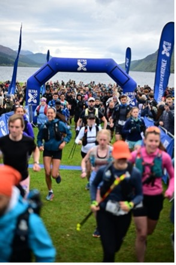
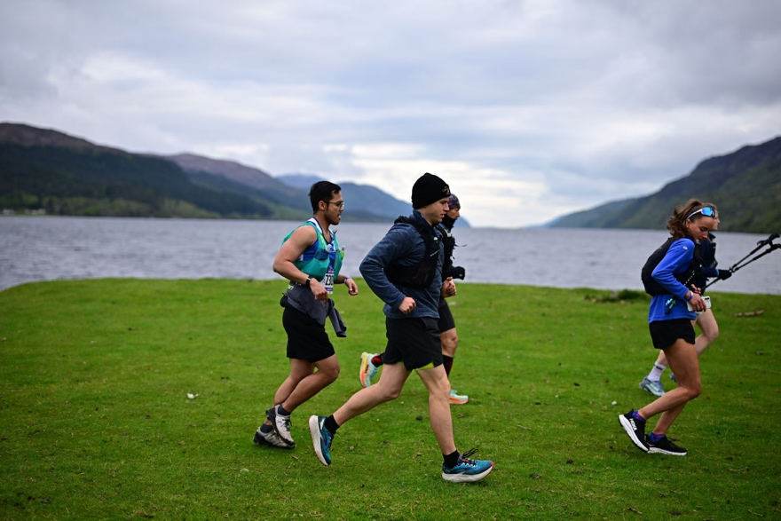
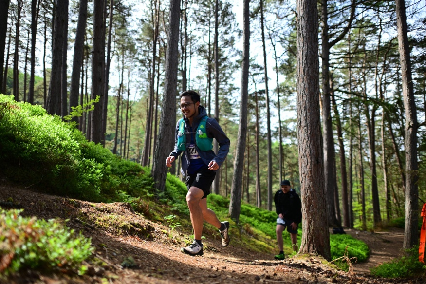
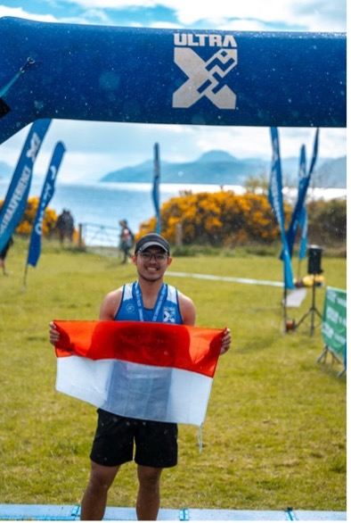

A lot of people wonder why I do what I do and some even call me crazy. Last weekend, I completed my first 50K Ultra Trail Marathon at the age of 23, right along the beautiful Loch Ness with its unpredictable weather in Northern Scotland.

Be Naive Enough to Start, Stubborn Enough to Finish
There's one quote from Ross Edgley that really resonates with me: "Be naive enough to start and stubborn enough to finish."
For me, running, especially long-distance running, shapes your mindset. To endure the discomfort, you need dedication, consistency, and persistence. With proper preparation, what some people think is "crazy" becomes completely possible.

Running an ultra opened my eyes to just how crucial preparation is — not just in races, but in life. I could only fit so much into my running vest, but I had to be ready for anything: rain, cold wind, heat, darkness, sunshine.
And just like stuffing the right gear into a tiny running vest, choosing the right habits and mindset can carry you through uncertainty.
"What are you looking for in running such a distance?" After 6 hours and 30 minutes on the trail, I realized: I'm not looking for anything. I just truly love what I'm doing.
I enjoy every second of it — the pain, the effort, the feeling behind each step.

Key Lessons from the Trail
Your body can endure what your mind believes in (with preparation).
We are competing with ourselves, not with people around us.
Know your limits. I stopped and walked every time I felt a cramp coming.
Moving slow is enough; stopping is not.
That's the beauty of life. Not every path is going to be easy or smooth — but if you just keep moving, and don't stop, you're already making progress.

To all my friends, family, and loved ones: keep seeking discomfort. To anyone navigating their own "uphill miles" in work or life: keep moving. Keep showing up. Even slow progress is still progress.
You will be proud if you do.